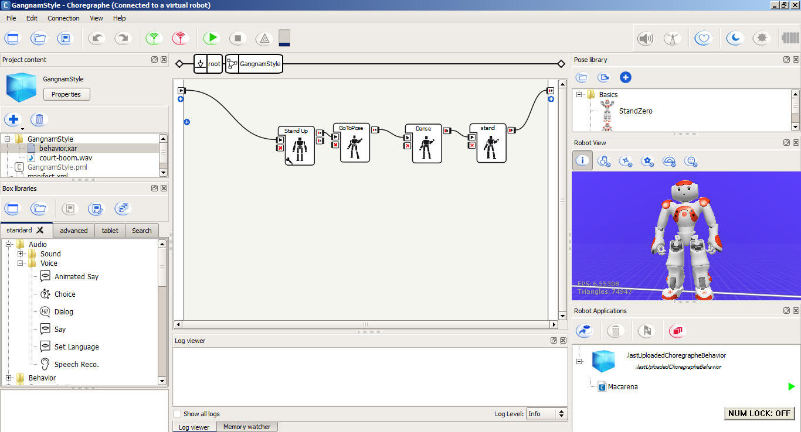

Hands on Artificial Intelligence Robotics
with NAO robot
National Science Week
City Library, City of Adelaide
19 August 2017
Asheshwor Shrestha
asheshwor@gmail.com
What we'll do today?
- Learn NAO robot basics
- Create programs in Choregraphe to control NAO Robot
- Exercise 1: Hello world with NAO
- Exercise 2: NAO's animation mode
- Exercise 3: Conversations with NAO
- Exercise 4: Facial recognition
NAO Robot basics
- What is a Robot?
- A robot is an intelligent system that interacts with the physical environment through sensors and effectors.1
- NAO is a humanoid robot developed by Aldebaran Robotics, a French robotics company
- 58cm tall, 5-kg
- NAO is a completely programmable, autonomous, and interactive robot
1. https://www.cs.utexas.edu/~kuipers/slides/L1-Intro.pdf
NAO sensors and kinematics
- Tactile sensors: Head, hand, and foot
- Cameras, speakers, microphones, sonars, joint position sensors, accelerometer
- 25 degrees of freedom
- Turning stiffness on and off - wake up / sleep
- Move NAO’s arm from robot view
Choregraphe software
- Developed by Softbanks
- Developed for Linux, Windows and Mac systems
- Node based code editor (like Scratch or Dynamo)
- Drag and drop "code boxes"
Choregraphe software
Choregraphe screenshotExercise 1: Hello world with NAO
- Make NAO talk and walk with Choregraphe "code boxes"
- Using “Animated say”, make NAO wave and talk
- Make NAO walk a set distance
Animation mode
- Used to create movements from a series of poses
- Controlling motor stiffness
- Adding keyframes to animation timeline
Exercise 2: NAO's animation mode
- Make NAO raise an arm using animation mode
Autonomous life
- NAO has "Basic Awareness" enabled, "Breathing" animation, can recognise human speech and reply using Animated Say
- “Interactive” mode: one-to-one interaction
- “Solitary” mode: listening and responding to stimulus from the environment
NAO controles in Choregraphe
Exercise 3: NAO's autonomous mode
- Demo NAO’s autonomous capabilities
- NAO's speech recognition and response capabilities
Exercise 4: Facial recognition
- Make NAO remember a face and respond if it recognises the face
Further programming
- Expand NAO’s capabilities with Python, C++, Java (and more)
Python example:
from naoqi import ALProxy
naoip = "123.466.789.10" #robot's IP address
naoport = 9559 #robot's port, fixed for all NAO robots
tts = ALProxy("ALTextToSpeech", naoip, naoport)
tts.say("Hello World!")
Finishing off
For further NAO workshops, check library website: http://www.cityofadelaide.com.au/libraries.
Slides: asheshwor.github.io/nao/presentation
Slides for printing:asheshwor.github.io/nao/presentation/?print-pdf
Press key for references, acknowledgements and attributions
Acknowledgements
- Much of the programs demonstrated in this workshop were developed while the author was working as "NAO Robot Innovator in Residence" at the City Library, City of Adelaide, South Australia.
- Thanks to NAO Robot Innovator in Residence peers, Helton and Saman.
Attributions
- All products, logos and company names are trademarks or registered trademarks of their respective holders. Use of them does not imply any affiliation with or endorsement by them.
- Photo credits: Cover video by author; Choregraphe logo from Aldeberan website; NAO robot background from Aldeberan documentation.
- Slide framework: Reveal.js
- Fonts: Google fonts and Font Awesome